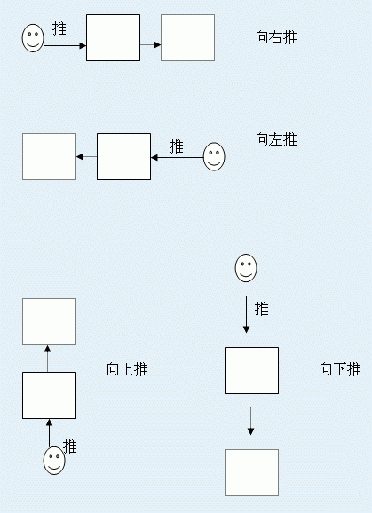

S – 集装箱,
M –仓库管理员的位置,
P –包裹开始的位置,
K –包裹最后的位置,
w –空区域.
S, M, P 和 K 在文件中只出现一次.
第一行有两个用单个空格分隔的正整数n,m<=100. 接下来是货物存放二维表.共N行，每行为M 个字母组成的单词，字母分别是S, M, P, K, w. 第i单词的第j个位置表示第i行第j列区域的信息，可能是如下内容:
有一个仓库被分成n*m 个矩形区域，如果两个区域有一条公共边，则被认为这两个区域相邻。包裹都放在一个区域中，剩余的区域或者空闲或者被集装箱占有，这是因为集装箱太重，仓库管理员不能将集装箱搬走。仓库管理员目是是要将包裹从开始的P区域移动到最后的K区域。他可以从空区域走到与之相邻的一个空区域。当仓库管理员走到与包裹相邻的区域时，它可以推动包裹，具体的推动方法如下所示：

读入一个储藏表，开始位置为仓库管理员，最后位置为包裹移动的位置
S – 集装箱,
M –仓库管理员的位置,
P –包裹开始的位置,
K –包裹最后的位置,
w –空区域.
S, M, P 和 K 在文件中只出现一次.
第一行有两个用单个空格分隔的正整数n,m<=100. 接下来是货物存放二维表.共N行，每行为M 个字母组成的单词，字母分别是S, M, P, K, w. 第i单词的第j个位置表示第i行第j列区域的信息，可能是如下内容:
如果包裹不能移动到目的位置，则写入NO。
如果包裹能移动到目的位置，则写入最小的移动次数。
10 12
SSSSSSSSSSSS
SwwwwwwwSSSS
SwSSSSwwSSSS
SwSSSSwwSKSS
SwSSSSwwSwSS
SwwwwwPwwwww
SSSSSSSwSwSw
SSSSSSMwSwww
SSSSSSSSSSSS
SSSSSSSSSSSS
7